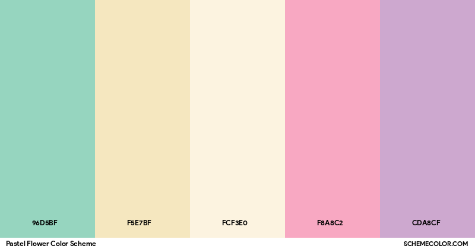

Relax In Pastels
Relax In Pastels PaletteContrasting Pastels
Contrasting Pastels PalettePastel Candy
Pastel Candy PalettePastel Flower
 Pastel Flower PaletteHover Gallery 3
Spitfire
Spitfire is the debut extended play (EP) by American electronic music producer Porter Robinson, released on September 13, 2011, through Owsla. After releasing his 2010 single "Say My Name", Robinson expressed desire to explore different musical genres by producing an EP, diverging from his traditional eurodance style.
Worlds

Worlds is the debut studio album by the American electronic music producer Porter Robinson, released on August 12, 2014, by Astralwerks. Initially known for his heavier bass-centric production, Robinson became increasingly dissatisfied with the electronic dance music (EDM) genre, believing it limited his artistic expression.
Nurture

Nurture is the second studio album by American electronic music producer Porter Robinson, released on April 23, 2021, by Mom + Pop Music. The album was written in the years following Robinson's debut album Worlds (2014), a period when Robinson struggled with mental illness and writer's block. As a result, the album represents a significant stylistic shift in his work; critics noted that the album features a greater emphasis on acoustic instruments and personal lyrics, while retaining many elements of the innovative electronic style of Worlds.
SMILE! :D
Smile! :D (stylized in all caps) is the third studio album by American electronic music producer Porter Robinson, released on July 26, 2024, through Mom + Pop Music. In recording the album, Robinson sought to break away from many stylistic elements of his previous work. The music on the record draws from pop-punk, early 2000s rave, and hyperpop influences.